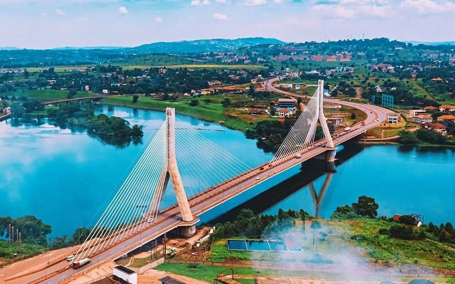

Jinja is my favorite city because it is the source of the Nile River. The city has beautiful scenery, peaceful surroundings, and friendly people.
Tourists visit Jinja for boat rides, sightseeing, and other fun activities. I love visiting Jinja and enjoying its calm riverside views.
